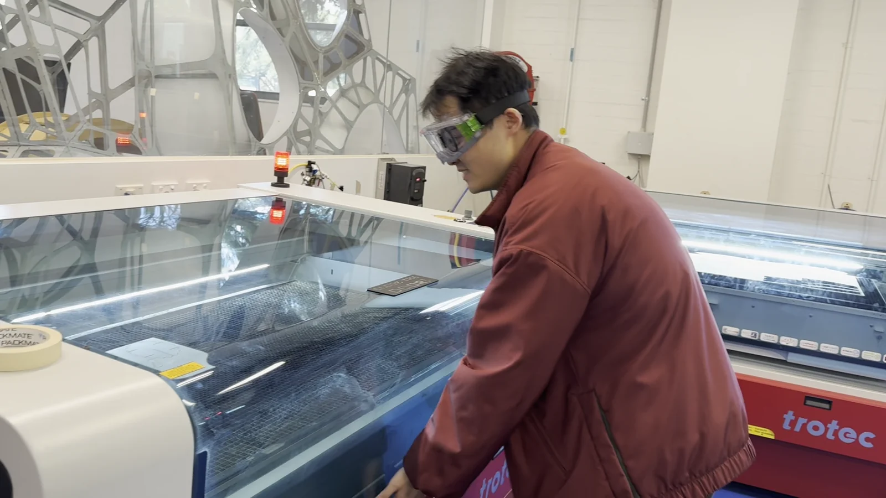
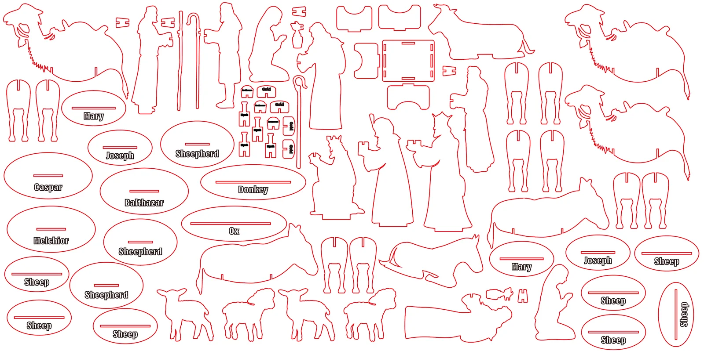
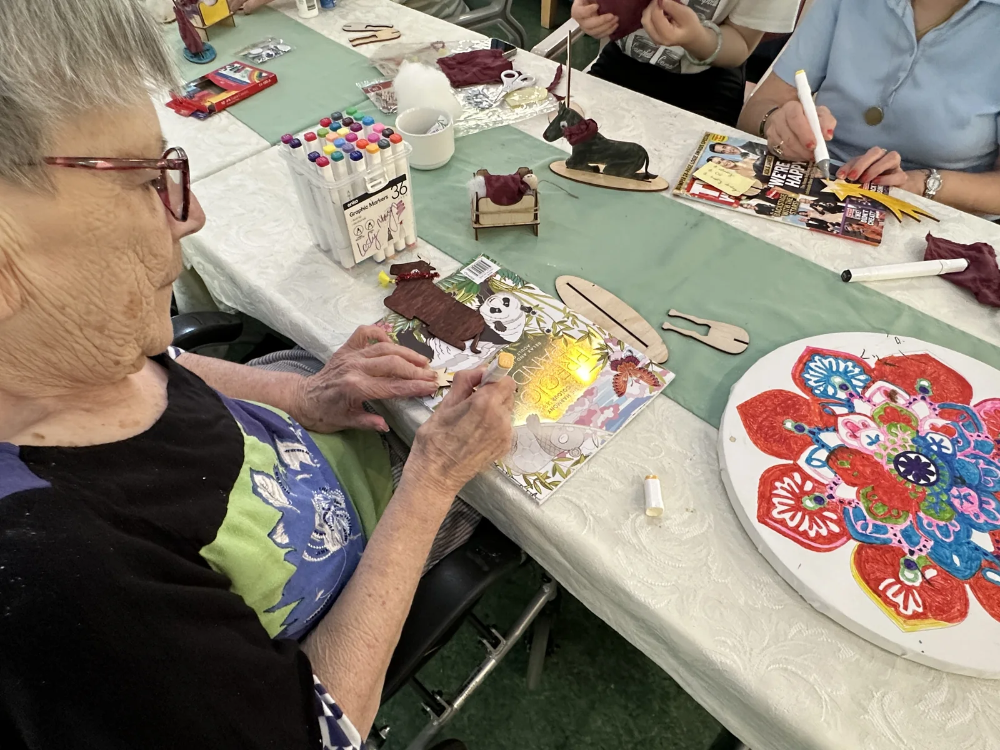
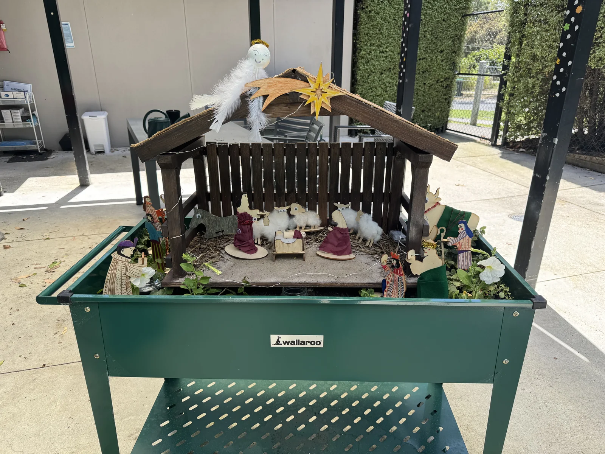
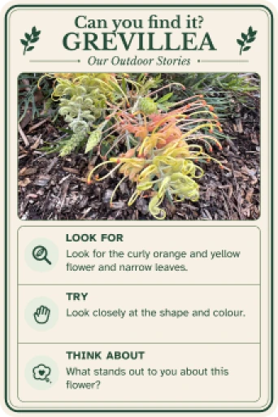
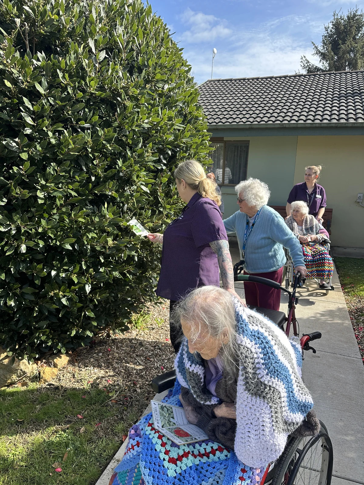
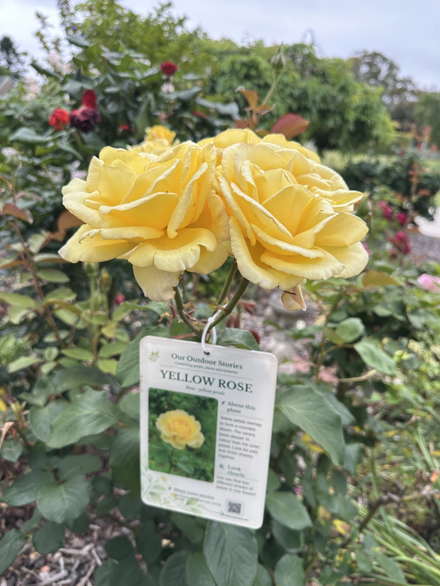
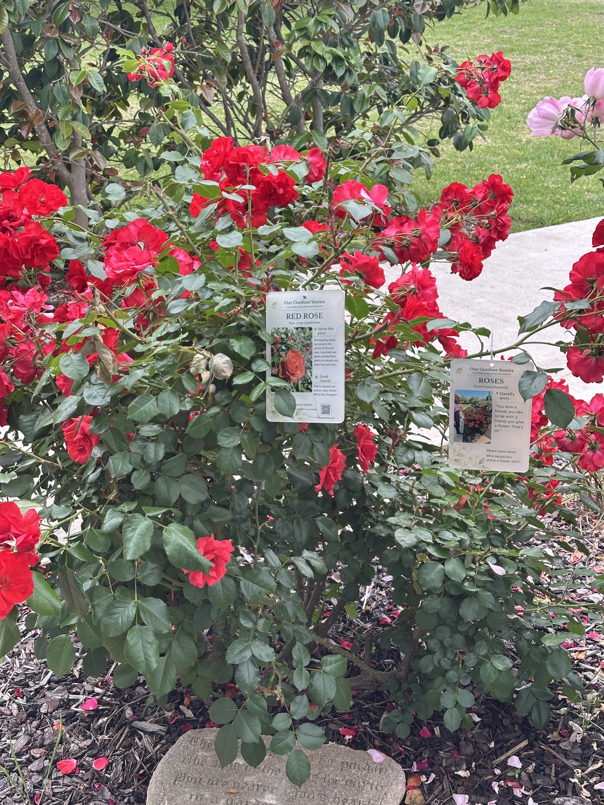
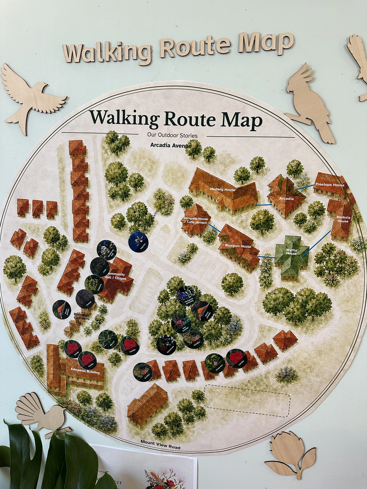

Design practice Design process& output. I combine digital fabrication, illustration, and information design to make materials for shared activities with older adults.
ProtoLAB & fabrication Visual & information design
Physical making
ProtoLAB & Turning digital drawings into physical pieces that people can assemble, decorate, and make their own.
Skills Vector drawing · Laser cutting · Material prototyping
Design process Draw. Prepare outlines, slots, and bases in Adobe Illustrator.Make. Laser-cut wooden parts at Swinburne ProtoLAB.Refine. Use workshop observations and staff feedback to simplify assembly.Follow the design iterations

Making at ProtoLAB. Turning the digital files into wooden parts. Video still, 2024.
Preparing the cutting files. Outlines, slots, and separate bases for the Nativity figures. Output Wooden figures to assemble and personalise. Colour, fabric, and wool chosen by residents. A shared Nativity scene in the garden. Explore Outdoor Nativity Scene

Figures to personalise. Adding colour and detail to the prepared wooden forms, November 2024.
The shared outdoor display. The decorated figures together in the garden, December 2024.
Visual communication
Visual & Cards to carry, information beside the plants, and a large map to explore together.
Skills Information design · Print production · Spatial illustration
Design process Recognise. Use photographs of the plants along the walking route.Explore. Pair images with short prompts to look, try, and talk.Make. Produce cards for carrying and hanging outdoors.Card specifications
Size 12 × 18 cm
Material 3 mm acrylic
Printing UV printing
Formats Hand-held & hanging

Treasure hunt card. A portable prompt for looking closely.Plant information card. A shared reference beside the living plant. Output in use
Treasure hunt cards Hold a card during the walk. Match its photograph with the plant. Pause to notice a detail or share a thought.
In residents’ hands. Choosing and looking at the cards before setting off.
Along the walking route. Taking the photograph to the plant. Plant information cards Hang the card beside its plant. Keep the name, photograph, and prompts together. Make the information visible on later walks.

Beside the plant. A yellow rose information card hanging from the rose bush, November 2026.
Part of the garden. The card stays with the plant along the route, November 2026. A shared circular map Bring the walking route into one large visual. Point to familiar plants and places together. Revisit outdoor experiences in an indoor conversation. See the map in the study

The large-format map. Plants and paths brought together in a circular walking map.A map to use together. Locating plants and sharing memories around the table. Illustration beyond the fieldwork Digital illustration, landscape sketches, and scenes from everyday life.
Explore my artwork